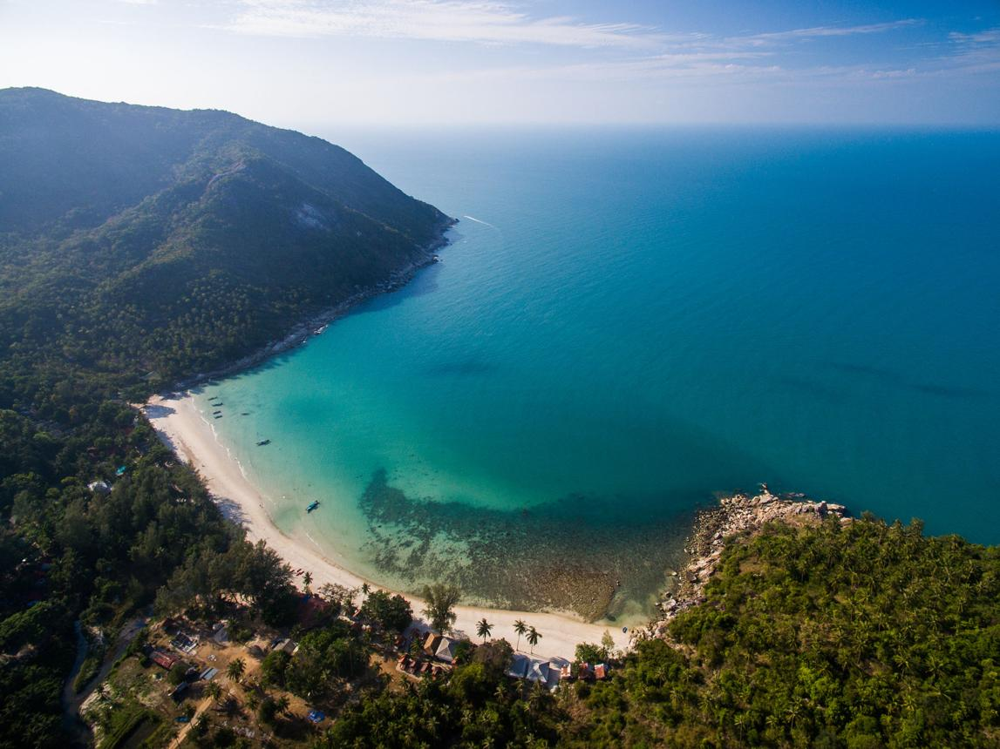

Stories of Morocco & Koh Phangan
Travel more thoughtfully. Discover more deeply.
The Dar Mansour Journal
Exploring Koh Phangan beyond the obvious, and Morocco beyond the clichés — through thoughtful travel guides, cultural stories and timeless tradition.
Fresh from the Journal
 Moroccan Culture
4 July 2026
The Dadas: The Women Who Preserved Morocco's Family Recipes
Meet the Dadas, the women who preserved Morocco's family recipes across generations — and whose slow-cooked legacy lives on at Dar Mansour, Koh Phangan.
Read the story
Moroccan Culture
4 July 2026
The Dadas: The Women Who Preserved Morocco's Family Recipes
Meet the Dadas, the women who preserved Morocco's family recipes across generations — and whose slow-cooked legacy lives on at Dar Mansour, Koh Phangan.
Read the story
Explore by world
Five doorways into Dar Mansour
The Menu — Tajines, Couscous, Chhiwats, Msemen
Every dish at Dar Mansour is a piece of Morocco brought to Koh Phangan. From saffron couscous steamed four times, to tajines that simmer for hours, to msemen and chhiwats that echo the streets of Marrakech — a soulful journey through Moroccan culinary heritage.
Explore the menuMansour Spirit — Hospitality, Dadas & Family Rituals
Hospitality is sacred in Morocco. We continue the traditions of the Dadas — women who carried recipes, wisdom and rituals from one generation to the next. Here, every guest is welcomed like family, every dinner a ritual of care.
Discover the spiritMorocco's Kitchen — Slow Cooking & Sacred Pantry
In Morocco, patience is flavour. Our tajines, couscous and tanjias are prepared the slow way — hours of cooking, layers of spices and care in every step. We believe in sacred cooking: food that nourishes body and soul.
Enter the pantryMorocco & Koh Phangan — Inspirations, Travel & Culture
Dar Mansour is a bridge between Morocco and Koh Phangan. We highlight Moroccan cities and traditions while guiding you through the island's hidden beaches, artistic inspirations and cultural gems.
Discover the experienceMansour Bar — Cocktails & Artful Evenings
Our bar is a celebration of creativity: Moroccan-inspired cocktails, curated wines and evenings filled with art and conversation. From citrus-infused gin to spiced rum creations, each drink is designed to complement our food.
Step into the barThe voices behind our stories
Every word is rooted in real experience, real recipes and real people.
Maïja — Co-Founder
A creative spirit who has spent more than 30 years immersed in Moroccan culture, carrying forward its culinary heritage with a modern soul. Guided by the wisdom of the Dadas, she co-founded Dar Mansour as a sanctuary of food, culture and soulful hospitality in Koh Phangan.
P'Jae — Head of Kitchen
Our local partner and Head of Kitchen, P'Jae brings daily hands-on expertise to Dar Mansour, translating Moroccan traditions into refined, slow-cooked dishes prepared with patience and care — rooted in respect for sacred cooking and island hospitality.
"Where Morocco meets Koh Phangan — every story is a bridge between two worlds."The Dar Mansour Journal
Live the story, don't just read it
The best chapters are written around the table. Reserve your evening at Dar Mansour.